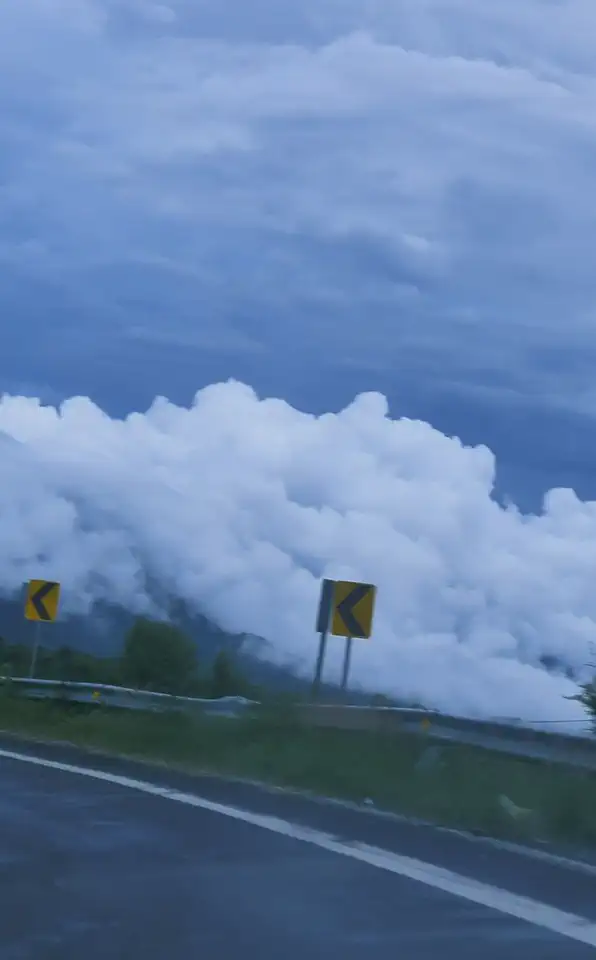

01 / 05Mile 0
Take the
long way
We plan road trips around the drive itself: the bends, the weather, the stops nobody puts on a list.

Mountain passes, slow miles, no fixed itinerary. Scroll to drive the road.
We plan road trips around the drive itself: the bends, the weather, the stops nobody puts on a list.
Our routes climb past the cloud line before breakfast, so the view does most of the talking.
A prepped 4x4, offline maps, a stove in the back and someone on call if the road has other ideas.
Short days on purpose. You arrive mid-afternoon, with time left to actually stop and look.
Every trip
These are the specs of a concept trip, not a real booking. The whole page is generated from one config file and one video.
Video flow
Real footage of a mountain pass, cut into 90 frames and drawn to a canvas as you scroll. Tap a frame to drive back to it.
Longway
A concept for a fictional road-trip company. Nothing is for sale; the road is real.
Zyqor Lab concept. Fictional brand, real footage.